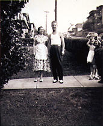
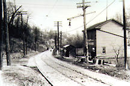

Beechview Historical Photographs
Jim Rosefield's Lee School Elementary
Class | James & Ruth Rosfeld | Tropical & Gladys Avenue | Nate
& Constanza Marinis | Ruth Rosfeld |
Saw Mill Run Boulevard | Beechwood
School
Jim Rosefield's Lee School Elementary Class
Back to top

James & Ruth Rosfeld, Dagmar Avenue, 1951
Back to top

Tropical & Gladys Avenue, 1936
Back to top
Nate & Constanza Marinis, 1940's
Back to top
Ruth Rosfeld
Back to top
Saw Mill Run Boulevard, Oil shed, 1930
Back to top
Beechwood School, 1923
Back to top